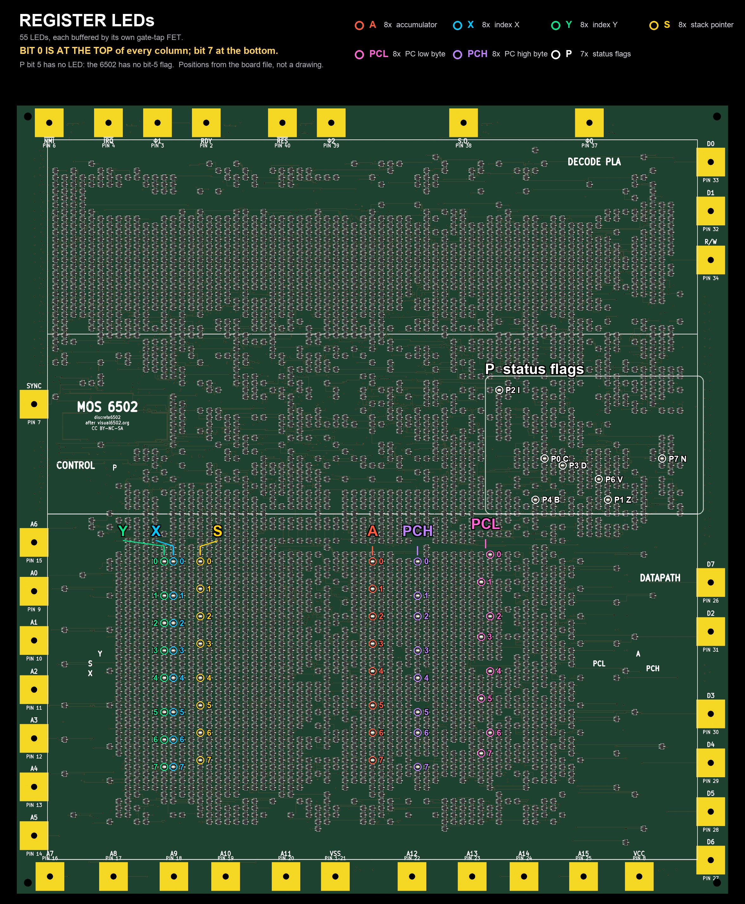

discrete6502 — the bring-up sequence for the boards as delivered: 4 assembled,
1 bare. Sources: pico-controller/README.md (the authoritative sequence),
“Driver contention” and “Expected fab yield” in project-plan.md, and
the rev A rework page.
What actually happened when these steps were run on the real boards is logged separately:
bring-up as it actually happened.
w / W) before the
rework. Freezing the clock is precisely the condition that parks a pull-up and a
pull-down on together. Before the rework that is 262 mA and ~0.9 W per site; after
it, 0.5 mA.pico-controller/README.md carries the same
sequence under its own numbering, which predates this page and is referenced from elsewhere in the
repo. The steps map like this: this page's Steps 0–2 are its Steps 1–2, Step 3 is the
optional paragraph at the end of its Step 2, Step 4 is its Step 2b,
Step 5 is its Step 3, and Steps 6–8 are its Step 4. Same order, same gates.
arm-none-eabi-gcc, to build pico-controller/tester
(and later wifi). Build with PICO_BOARD=pico2_w.6502_65C02_functional_tests, assembled to Intel hex.Before a probe touches anything.
project-plan.md is 0.5–2 defects per board across ~14,700
solder joints. Expect 2 of the 4 to work at first power-up (plausibly 1–3), ~85%
odds that at least one does, and 3–4 working after rework. A single-defect board is a repair job,
not a loss: every FET is on the top face, and the functional test localises failures to a block.
The one pattern worth noticing is clustering — thermal mass and warpage on a board this
large make defects more likely to group by region than to scatter. If failures map onto one area of
the die, suspect the reflow profile, not a random joint.
Measure resistance from a VCC bond pad to a VSS bond pad on each of the four assembled boards. Record the polarity and the range with every number — on this board a bare figure in ohms is meaningless, for the reason below.
Gate: red on VSS reads a few hundred ohms and the value changes with range; red on VCC reads OL on a low range.
There is no resistive path between the rails at all — verified against
gen/netlist.json by tools/step1_model.py. The meter is reading a
junction: every pull-down FET's body diode conducts VSS → drain, and where that drain
carries a 10 kΩ pull-up it forms a VSS → VCC branch. There are 1,899 such body diodes
across 947 nets. So what the meter displays is a diode drop divided by whatever current
the selected range happens to source, and it legitimately reads 195 Ω, 314 Ω or 3.77 kΩ for the
same board.
What identifies a genuine fault is therefore not a low number, but a number that behaves like a resistance:
This is the single most informative measurement in the whole project. It finds a bridged rail, a reel loaded backwards, and missing pull-ups — the faults that would otherwise be identical on all four boards.
| Reading at 5 V | Verdict |
|---|---|
| ≈0.35 A | The prediction. This is a healthy board. |
| Up to 0.65 A | Still within the legitimate worst case — every pull-up low and every LED lit. Unusual but not a fault. |
| Folds back into current limit at near-zero volts | A short. Stop, find it. |
| Folds back only near 5 V | Ambiguous — see the box below. |
| Grossly high, or grossly low | A systematic fault: bridged rail, wrong or backwards reel, missing pull-ups. Do not proceed, and do not rework three more boards. |
dor bit's gate and its
pull-down's gate from both sitting above threshold. The claim is really “sustained contention is
unlikely without clocking”, not “contention is impossible”. It does not change what you do, because
the protection was never the absence of contention — it is the current limit. At
0.5 A the supply folds back the moment two nets contend at 262 mA each, the rail sags, and
dissipation stays far below the level that damages a SOT-323. These parts fail from sustained
heating, which a current-limited supply prevents.
Gate: a current reading you understand, on a board you are willing to keep.
Worth doing. It is the first evidence that the logic itself lives, and it needs no firmware.
The data bus floats, because no memory is connected, so the CPU executes garbage. That is fine
and expected. What matters is that the register LEDs move. Movement proves two
things at once: the internal clock phases (cclk, 482 gates; cp1, 198
gates) are being regenerated on-board at full VCC swing, and the dynamic logic is holding charge
between edges.
A 5 V Uno or Nano is a good fit, for one specific reason: its outputs are push-pull.
That is not a convenience here — clk0 has no pull-up on the board (only
R1079, 100 R, and the clamp diodes D66/D67), so an
open-drain or tri-stated driver would leave the clock floating, and a dynamic CPU cannot survive
that.
| Arduino | Board | Why |
|---|---|---|
| D9 | Φ0 bond pad | The clock. Goes through the on-board 100 R; no external pull-up needed with a push-pull driver. |
| GND | VSS bond pad | Mandatory. Without a common reference nothing works, and the clock edge is undefined. |
| D8 | RES bond pad | Or croc-clip straight to VCC. RES has
no pull-up — only R1074 and its clamps — so it must be driven. |
| — | IRQ, NMI → VCC | Both float: 100 R and clamp diodes only, no pull-up. A floating gate on a dynamic input can drift across threshold and fire a spurious interrupt. |
| — | RDY, SO — leave alone | These two do carry 10 k pull-ups
(R48, R991). |
Do not power the board from the Arduino. The board draws ~0.35 A, past what the Uno's regulator should supply and well past USB-only sanity for this design. Bench supply for the board, USB for the Arduino, grounds commoned through the table above.
void setup() {
pinMode(8, OUTPUT); digitalWrite(8, LOW); // RES asserted low
tone(9, 2000); // clock running FIRST
delay(20); // >> 2 clocks at 2 kHz
digitalWrite(8, HIGH); // release reset
}
void loop() {} // tone() is timer-driven1–2 kHz is the frequency to pick: comfortably above the predicted
worst-node retention floor (~378 Hz) and far below the ~20 kHz ceiling. Jitter is
irrelevant — dynamic logic cares only about the maximum period, not about stability — so
tone() is entirely adequate and no timer configuration is needed.
Tying RES straight to VCC is enough for a smoke test, but the sequence above gives the CPU a defined entry: clock first, then release reset. Note the ordering. Releasing reset into a stopped clock is the stall condition.
The one rule: never stop the clock while the board is powered. Kill the supply first, then the Arduino. A parked clock is what freezes the dynamic nodes and parks a pull-up and pull-down on together.
Full illustrated instructions, with true-scale renders of all eight sites and their neighbouring designators: the rev A rework page. Follow that page for the procedure; this is only why it belongs here in the sequence.
The board as fabricated has a device-ratio defect: the eight data-bus output drivers use a BSS138W as the load against a BSS138W as the pull-down — a 1:1 ratio where ratioed NMOS needs a weak load. Measured consequences at 5 V, per contended site:
| As built | With the 10 kΩ | |
|---|---|---|
| Contention current | 262 mA | 0.499 mA |
| The contended “low” | 1.86 V — invalid | 2.9 mV — valid |
| Dissipation in the pull-up FET | 0.90 W in a SOT-323 rated ~0.3 W | 2.5 mW |
| Board total, clocked | ≈2.1 A / ≈10.4 W | ≈0.3 A |
The thermal problem is the loud one, but the functional problem is the serious one: a contended
node sits at 1.0–1.9 V against a 1.1–1.5 V receiver threshold, so the CPU can
write wrong data. The fix is simulated end-to-end in sim/revb_driver.sp, two
stages deep to a real chip output — it costs nothing in speed (271 ns rise against a
25 µs budget) and it makes the output level higher, not lower.
Eight sites, all on the front face, in one column at x ≈ 220 mm (dor6/dor7 at x ≈ 216.5 mm), 11–14 mm apart. Same part, same orientation, identical copper — it is the same operation eight times.
Gate, per site: pin 3 lead to a VCC bond pad reads 10 kΩ; pad 3 to VCC still reads ~0 Ω.
Gate, whole board: VCC to VSS still reads high — you have not introduced a bridge.
Clean the flux off after each site and inspect under magnification. Then repeat Step 1 and Step 2 on the reworked board; Step 2 should be essentially unchanged, since contention was near zero unclocked anyway.
project-plan.md.
tester firmware onto the bare module first, on the
bench, and confirm it enumerates over USB. Reasons below.It can be reprogrammed in place, indefinitely and without touching the button:
pico_stdio_usb/reset_interface.c is linked into all three firmwares, so the SDK's
1200-baud-touch reset-to-bootloader works and picotool can reboot the module into its
bootloader over USB. Flashing once beforehand is still worth it:
main() calls bus_init(false) and then blocks on
while (!stdio_usb_connected()) sleep_ms(100);. A pre-programmed board powered up with no
terminal attached does nothing at all — no clocking, no reset ceremony. The CPU starts moving only
when you open a serial connection, which means the transition into Step 6 is something you choose
rather than something that happens to you.
bus_init leaves clk0 as an output driven LOW — every other
pin is an input. So a powered, pre-programmed board sits with the clock parked, which is the
stall condition: exactly what the retention test deliberately creates, and exactly what the
driver-contention defect makes dangerous. This is not a problem for the sequence as written, because
the Pico goes on at Step 5 and the rework happened at Step 4. It is a reason not to swap
those two steps, and a reason not to leave an un-reworked board sitting powered with a Pico fitted.
vss and pin 39 is vcc, side by side on 2.54 mm
pitch. A bridge there is a dead short across the board supply. That is why Step 1 gets
repeated here.
Why pin 39 must be soldered rather than left off, which was considered and rejected:
With pin 39 soldered, either end can supply power: a bench supply on the bond pads runs the board and feeds VSYS (connect USB for serial only), or USB into the Pico runs everything through the module Schottky. Use the bench supply for anything that matters — USB-only is not viable at 5 V now that the real clocked current is known.
This is the “it is alive” moment.
tester firmware
(pico-controller/tester, PICO_BOARD=pico2_w).h for the command list.
tools/mark_leds.py from
gen/board_routed_golden.kicad_pcb and gen/netlist.json, so it matches
the board rather than a drawing — the tool verifies its own mm-to-pixel fit by checking that all
55 computed positions land on LED pad pixels before it draws anything. Click to enlarge.
Y and X are only 3.8 mm
apart, which is why their labels are splayed. The P flags are scattered across the
control block rather than in a column, so each is named individually
(P0 C, P1 Z, P2 I, P3 D, P4 B,
P6 V, P7 N) — and there is no P5 because the 6502 has no
bit-5 flag.For this step the only LEDs that matter are the A column, at x ≈ 145
in the middle of the datapath. If they count and nothing else moves, that is exactly right: the
counter loop touches A and the PC, so expect the PCL column to be busy too.
The default clock is a 50 µs half-period, i.e. 10 kHz.
Gate: with the rework done, clocked current should stay in the low hundreds of mA.
If it jumps toward 1.8–2.1 A, a rework site did not take. That current step is the measurement — it is the cheapest whole-board verification of the rework you will get. Go back and re-check the eight sites.
R reset sequence (assert, 8 cycles, release)
c N run N cycles (quiet)
t N run N cycles, printing each bus cycle
s [N] step N instructions, printing cycles
d [N] dump the last N trace entries
x A L hexdump L bytes of the image at offset A (hex)
m A B.. poke bytes at offset A (all hex)
z zero the cycle counter and traceIf the LEDs do not count, t is the tool: it prints
cycle addr(14-bit) data r/W SYNC per cycle,
so you can see whether the CPU is fetching sensible addresses at all.
$FFFC/D appears at offset $3FFC/D.
Two unknowns that only hardware can settle, and they are the two ends of the same window.
pWalk the clock up with p US (half-period in µs) until the CPU stops executing
correctly. Simulation predicts ~20 kHz at 5 V (~10 kHz at
3.3 V), set by the decode-PLA input lines driving up to 71 gates behind a single 10 kΩ
pull-up. The M2 target was ≥50 kHz, so this is a known shortfall, not a surprise.
WOnly after the rework. This is the test the safety rules exist for.
Dynamic logic has a lower clock bound as well as an upper one: stop too long and the stored
charge leaks away. w MS freezes the clock for MS milliseconds and asks whether the
state survived; W [MAXMS] finds the boundary by bisection, running a 0 ms control
first so a broken harness cannot masquerade as a result.
The worst nodes are sb1..sb7 — one gate of capacitance (32 pF) against
twelve FET channels leaking them. The big nets are the safe ones. The decisive number:
at the 20 kHz ceiling the worst node must leak under 53 nA per FET
(under 27 nA at 3.3 V), or the floor rises above the ceiling and there is no working clock
at all. Typical parts are ~1 nA, giving ~50× margin — but SPICE could not resolve leakage at
this level, so this is genuinely unmeasured until you measure it.
The bring-up acceptance target is Klaus Dormann's
6502_65C02_functional_tests — the standard suite for 6502
re-implementations rather than emulators.
6502_decimal_test.a65 before the main suite. Decimal mode comes free from the
netlist and is the thing emulators most often get wrong, so it is a high-information, short test.
Do not assemble by hand. tools/build_functest.py drives the suite's own assembler
and does the board-specific work — it needs a checkout of the suite as a sibling directory and
Docker, because AS65 1.42 is an i386 binary:
python3 tools/build_functest.py # both tests
python3 tools/build_functest.py decimal # just oneOutputs land in gen/functest/: a .hex ready for L, and a
_traps.csv listing every self-loop with its source line. The script sets
ram_top = $40 (the suite's own preset for a 16k mirrored system), folds
64 KB to 16 KB the way the hardware does and fails on a real aliasing collision,
patches the reset vector, and extracts the verdict map.
bin_files/6502_functional_test.bin
byte for byte, which validates the assembler path; then each generated image was run to completion
in an emulator against a mirrored 16 KB memory. The decimal test reaches its PASS loop in
46,089,513 cycles and the functional test reaches $34D8 in 96,779,996 cycles with
test_case at $F0. So a failure on the board is the board, not the image.
| Functional test | Decimal test | |
|---|---|---|
| Entry | $0400 | $0200 |
| Progress address | $0200 (test_case) | $0001 (N2) |
| Progress range | 0..43, then $F0 for the final phase | 0..255, twice |
| PASS | $34D8 | $024F |
| FAIL | any other self-loop — look it up in the CSV | $0252 |
| Spurious NMI | $380B | $02F3 |
| Spurious IRQ | $3819 | $02F3 |
| Cycles to PASS | 96,779,996 — 2 h 41 m at 10 kHz | 46,089,513 — 1 h 17 m at 10 kHz |
p 50 # the conservative default clock
L # paste gen/functest/<test>.hex into the terminal
k 0200 # watcher at the progress address ($0001 for the decimal test)
R # reset
g # go: run until a self-loop, printing progressThe reset vector is already patched in the image, so the old m 3FFC 00 04 step is no
longer needed.
The suite has no I/O, so the firmware reads two side channels off the bus: writes to the progress
address give live progress, and a repeated opcode-fetch address gives the verdict.
Pass and fail are both self-loops, distinguished only by address — which is why the
generated _traps.csv matters. It gives every failure address its source line and the
test_case number that was current, so a stop narrows 4,051 FETs to a functional
block.
report = 1 option prints text through an I/O channel, but it adds
3.5 kB and the image then ends at $466B, past the $3FFA ceiling of the
mirrored window. The two side channels are the whole story.
irq and nmi high before a long run. Neither has a
pull-up on the board — only a 100R and the clamp diodes, unlike rdy and so
which carry 10 kΩ (R48, R991) — and the Pico drives neither. Both
float, and a floating gate on a dynamic input can drift across threshold and fire a spurious
interrupt that ends a three-hour run for no reason. Croc-clip both bond pads to VCC, directly or
through 10 kΩ. If one fires anyway it is identifiable: the run stops at
$380B (NMI) or $3819 (IRQ), and neither is a test trap.
wifi firmware
is the better harness for a run this long — same watcher, but progress in a browser, with the bus
engine pinned to core 1 so association and DHCP cannot stretch a clock phase.
| Measurement | Expected | Meaning if wrong |
|---|---|---|
| VCC↔VSS, unpowered, red on VSS | ~195 Ω on a 200 Ω range; rises with range | <1 Ω = solder bridge. Same value on every range = a real resistive fault |
| VCC↔VSS, unpowered, red on VCC | OL on a 200 Ω range | Low and range-independent = fault |
| 5 V, unclocked, no Pico | ≈0.35 A (worst case 0.65 A) | Systematic assembly fault |
| 5 V, clocked, before rework | ≈2.1 A / ≈10.4 W | The defect, working as measured |
| 5 V, clocked, after rework | Low hundreds of mA | ~2 A = a rework site did not take |
| Pin 3 to VCC, after rework | 10 kΩ | 0 Ω = leg still touching; open = bad joint |
| Clock ceiling | ~20 kHz at 5 V | Unmeasured until you measure it |
| Retention floor | Expect ~ms-scale; needs <53 nA/FET | Above the ceiling = nothing runs |
| Pico GPIO | Signal | Direction, Pico view |
|---|---|---|
| GP0–7 | db0–7 | bidirectional |
| GP8–21 | ab0–13 | in |
| GP22 | clk0 | out — clock master |
| GP26 | /res | out, open-drain |
| GP27 | r/w | in |
| GP28 | sync | in |
The CPU sees only 14 address bits: memory is a 16 KB image mirrored across
64 KB, and $FFFC/D lands at offset $3FFC/D.
R reset sequence (assert, 8 cycles, release)
c N run N cycles (quiet)
t N run N cycles, print each bus cycle
s [N] step N instructions (default 1), print cycles
d [N] dump last N trace entries (default 32)
x A L hexdump L bytes of image at offset A (hex)
m A B.. poke bytes at offset A (all hex)
p US set clock half-period in us (default 50 = 10 kHz)
z zero cycle counter + trace
L load an Intel hex image pasted into this terminal
k [on|off|ADDR] functional-test watcher (test_case addr, hex)
g [N] go: run N cycles (0/omitted = until a self-loop),
printing watcher progress; any key interrupts
w MS charge retention: freeze the clock MS ms, did it survive?
W [MAXMS] find the retention boundary by bisection (default 4000)
h this help
columns: cycle addr(14-bit) data r/W SYNCThe whole CPU can run at 3.3 V, and sim/passpair_33v.sp clears it. But it is the
tighter operating point, not the safer one, and it squeezes the clock window from both
ends:
| 5 V | 3.3 V | |
|---|---|---|
| Clock ceiling | ~20 kHz | ~10 kHz |
| Retention floor: leakage budget | <53 nA per FET | <27 nA per FET |
| Usable clock window | ~50× | ~13× |
| Register LED current | 1.42 mA | 0.67 mA |
The cost is ambiguity: a board that misbehaves at 3.3 V does not tell you whether the cause is an assembly fault or reduced margin, and you have to go to 5 V to find out. A first test with an ambiguous failure mode is a bad first test. Use 3.3 V after Step 2 has given a good reading, as a diagnostic lever — changing the rail changes the timing, and the difference is informative.
To get there, remove the competing supply: a soldered pin 39 plus USB holds board VCC near
4.8 V and a 3.3 V bench setting cannot win. Either disconnect USB after flashing (use the
wifi firmware to keep control with no cable), or use a data-only USB cable —
unverified: the RP2350 may need VBUS present to enumerate when self-powered, so
test that on a spare Pico before relying on it.
pico-controller/README.md.bus_init(true)). The default push-pull mode needs nothing, and a 3.3 V
push-pull clock into a 5 V core is simulated as functionally identical to a 5 V
one.Authoritative sources, in order of precedence when they disagree:
pico-controller/README.md for the sequence and the firmware,
project-plan.md (“Driver contention”, “Expected fab yield”) for the measurements and
the risk picture, the rework page for the eight sites, and
gen/board_routed_golden.kicad_pcb for anything geometric. If this page and one of those
disagree, they are right and this page is stale — please fix it.
{kind=link}